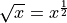
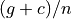
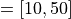
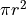
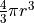

Lezione 3.2 - Python: Numeri¶
Numeri: Tipi Fondamentali¶
Ci sono tre tipi numerici fondamentali:
Tipo |
Significato |
|---|---|
|
Rappresenta numeri interi (!) |
|
Rappresenta numeri razionali a virgola mobile (float ing-point) |
|
Rappresenta condizioni, puo’ essere |
Note
I razionali float hanno precisione limitata: la maggior parte dei
razionali puo’ essere rappresentata solo approssimatamente con un
float.
Ai fini di questo corso, i dettagli non sono importanti.
Esempio. Creo tre variabili, una per tipo, poi le stampo a schermo con
print:
n = 10
x = 3.14
cond = False
# Stampo le tre variabili
print(n, x, cond)
# Idem, inframezzando testo
print("n =", n, "x =", x, "e la condizione cond vale", cond)
Questa sintassi di print vale per tutti i tipi di variabili, non solo
quelli numerici.
Numeri: Aritmetica¶
Tutti i tipi numerici mettono a disposizione le stesse operazioni aritmetiche:
Operazione |
Significato |
|---|---|
|
somma |
|
differenza |
|
prodotto |
|
divisione |
|
divisione intera |
|
resto della divisione (o modulo) |
|
elevamento a potenza |
Il tipo del risultato di n operazione m e’ automaticamente il tipo
piu’ “complesso” tra i tipi di n e m – per questo si parla di
conversione automatica.
La scala di complessita’ dei tipi numerici e’:
bool < int < float
Esempio. Ad esempio, se sommo un int ed un float, otterro’ un
float:
risultato = 1.2 + 1 # float + int
print(risultato) # 1.2
print(type(risultato)) # float
Questo perche’ e’ necessario un float per rappresentare il valore 1.2:
un int non basterebbe!
Warning
Per evitare errori, e’ necessario scegliere il tipo delle variabili in modo che il tipo del risultato sia sufficientemente “complesso” da riuscire a rappresentarne il valore.
Warning
State attenti che, come anticipato prima, la accuratezza della matematica fornita da Python non e’ perfetta. Per questo motivo a volte possono capitare dei risultati inaspettati:
Errore di arrotondamento: 1.1 + 2.2 = 3.3000000000000003
Errore di cancellazione: 0.1 + 0.1 + 0.1 - 0.3 = 5.551115123125783e-17
Numeri: Confronti¶
Tutti i tipi numerici (e in generale tutto i tipi Python che vedremo durante il corso) supportano le operazioni di comparazione:
Operazione |
Significato |
|---|---|
|
uguale |
|
diverso |
|
minore |
|
minore o uguale |
|
maggiore |
|
maggiore o uguale |
Il risultato di un’espressione di confronto e’ sempre un bool: vale
True se la condizione e’ soddisfatta, e False altrimenti.
Esempio. Aritmetica e confronti possono essere combinati per verificare condizioni “complesse”, come questa:
na, nc, ng, nt = 2, 6, 50, 4
risultato = (na + nt) > (nc + ng)
print(risultato)
print(type(risultato))
I valori Booleani bool (es. i risultati delle operazioni di confronto)
possono essere combinati attraverso le operazioni logiche:
Operazione |
Significato |
|---|---|
|
congiunzione: |
|
disgiunzione: |
|
negazione: |
Qui sia a che b sono dei bool.
Warning
In generale, fare aritmetica (es. somme) con valori Booleani e costruire espressioni logiche con valori interi o razionali e’ sconsigliato.
In questi casi, Python si comporta in modo (deterministico e spiegabile, ma decisamente) bizzarro.
Esempio. x > 12 e x < 34 danno come risultato dei bool, quindi
le posso combinare per ottenere:
# int int
# | |
print((x > 12) and (x < 34))
# \______/ \______/
# bool bool
# \___________________/
# bool
oppure:
# int int
# | |
print((not (x > 12)) or (x < 34))
# \______/
# bool
# \____________/ \______/
# bool bool
# \________________________/
# bool
Esempi¶
Esempio. Calcolo gli zeri dell’equazione quadratica :
a, b, c = 1.0, 0.0, -1.0
delta = b**2 - 4*a*c
zero1 = (-b + delta**0.5) / (2 * a)
zero2 = (-b - delta**0.5) / (2 * a)
print(zero1, zero2)
Qui uso x**0.5 per calcolare la radice quadrata: .
Esempio. Voglio calcolare il GC-content di un gene. So che il gene:
E’ lungo 1521 basi.
Contiene 316 citosine.
Contiene 235 guanine.
Simbolicamente, il GC-content e’ definito come . Per calcolarlo posso scrivere:
n, c, g = 1521, 316, 235
gc_content = (c + g) / n
print(gc_content)
Esempio. Per controllare che x (il cui valore e’ “fuori dal mio
controllo”, ma nell’esempio sotto fisso per convenienza) cada nell’intervallo A
 scrivo:
x = 17 # ad esempio
minimo_a, massimo_a, x = 10, 50
dentro_a = (minimo_a <= x <= massimo_a)
print(dentro_a)
oppure:
dentro_a = ((x >= minimo_a) and (x <= massimo_a))
Assumendo che dentro_a, dentro_b e dentro_c indichino che x e’
nell’intervallo A, B o C, rispettivamente, posso comporre condizioni piu’
complesse:
# x e' in almeno uno dei tre intervalli
dentro_almeno_uno = dentro_a or dentro_b or dentro_c
# x e' sia in A e B, ma non in C
dentro_a_e_b_ma_non_c = dentro_a and dentro_b and (not dentro_c)
Esercizi¶
Creare alcune variabili, controllando ad ogni passaggio che valore e tipo siano corretti (usando
printetype):aebcon valore12e23come interi.xeycon valore21e14come razionali.
Usando
print(una sola volta), stampare:Tutte le variabili di cui sopra sulla stessa riga.
Tutte le variabili di cui sopra, separate da
;, sulla stessa riga.Il testo “il prodotto di
aebe’a * b”, sostituendo ada,bea * bi valori delle variabili.
Determinare valore e tipo di:
Il prodotto di
aeb.Il quoziente di
xey.Il quoziente intero di
aeb.Il quoziente intero di
xey.Il prodotto di
bey.2elevato a0.2elevato a1.2.2elevato a-2.La radice quadrata di
4.La radice quadrata di
2.
Che differenza c’e’ tra:
10 / 1210 / 12.010 // 1210 // 12.0
Che differenza c’e’ tra:
10 % 310 % 3.0
Usando
pi = 3.141592e dator = 2.5, calcolare:La circonferenza di raggio
r: .L’area di un cerchio di raggio
r: .Il volume di una sfera di raggio
r: .
Creare due variabili
a = 100eb = True. Usando un numero opportuno di variabili ausiliarie (chiamatele come volete!), fate in modo che il valore diafinisca inbe che quello dibfinisca ina.(Scrivere
a = Trueeb = 100non vale!)Si puo’ fare con una sola variabile ausiliaria?
Sullo stesso strand di DNA si trovano due geni. Il primo include i nucelotidi dalla posizione 10 alla posizione 20, il secondo quelli dalla posizione 30 alla posizione 40. Scriviamo queste informazioni cosi’:
gene1_inizio, gene1_fine = 10, 20 gene2_inizio, gene2_fine = 30, 40
Data una variabile
posche rappresenta una posizione arbitraria sullo strand, scrivere dei confronti per verificare se:possi trova nel primo gene.possi trova nel secondo gene.possi trova tra l’inizio del primo gene e la fine del secondo.possi trova tra l’inizio del primo gene e la fine del secondo, ma in nessuno dei due geni.possi trova prima dell’inizio del primo gene o dopo la fine del secondo.poscade in uno dei due geni.posnon dista piu’ di 10 dall’inizio del primo gene.
Date le tre variabili Booleane
t,u, ev, scrivere delle espressioni che valgonoTruese e solo se:t,u,vtutte e tre vere.te’ vera oppureue’ vera, ma non entrambe.Esattamente una delle tre variabili e’ falsa.
Esattamente una delle tre variabili e’ vera.